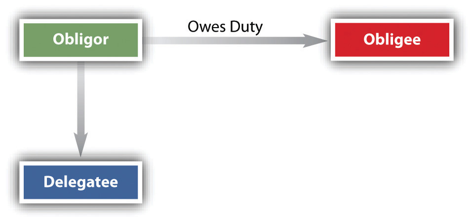

To this point, we have been considering the assignment of the assignor’s rights (usually, though not solely, to money payments). But in every contract, a right connotes a corresponding duty, and these may be delegated. A delegationThe passing or delivering by one person to another of the duty to perform a contract. is the transfer to a third party of the duty to perform under a contract. The one who delegates is the delegatorOne who delegates.. Because most obligees are also obligors, most assignments of rights will simultaneously carry with them the delegation of duties. Unless public policy or the contract itself bars the delegation, it is legally enforceable.
In most states, at common law, duties must be expressly delegated. Under Uniform Commercial Code (UCC) Section 2-210(4) and in a minority of states at common law (as illustrated in Section 14.4.2 "Assignment Includes Delegation", Rose v. Vulcan Materials Co.), an assignment of “the contract” or of “all my rights under the contract” is not only an assignment of rights but also a delegation of duties to be performed; by accepting the assignment, the delegateeOne to whom the duty to perform a contract is delegated. (one to whom the delegation is made) implies a promise to perform the duties. (See Figure 14.3 "Delegation of Duties")
Figure 14.3 Delegation of Duties
An obligor who delegates a duty (and becomes a delegator) does not thereby escape liability for performing the duty himself. The obligee of the duty may continue to look to the obligor for performance unless the original contract specifically provides for substitution by delegation. This is a big difference between assignment of contract rights and delegation of contract duties: in the former, the assignor is discharged (absent breach of assignor’s warranties); in the latter, the delegator remains liable. The obligee (again, the one to whom the duty to perform flows) may also, in many cases, look to the delegatee, because the obligee becomes an intended beneficiary of the contract between the obligor and the delegatee, as discussed in Section 14.3 "Third-Party Beneficiaries". Of course, the obligee may subsequently agree to accept the delegatee and discharge the obligor from any further responsibility for performing the duty. A contract among three persons having this effect is called a novationA new contract substituting for an old one, or a new party to a contract replacing a former party.; it is a new contract. Fred sells his house to Lisa, who assumes his mortgage. Fred, in other words, has delegated the duty to pay the bank to Lisa. If Lisa defaults, Fred continues to be liable to the bank, unless in the original mortgage agreement a provision specifically permitted any purchaser to be substituted without recourse to Fred, or unless the bank subsequently accepts Lisa and discharges Fred.
Personal services are not delegable. If the contract is such that the promisee expects the obligor personally to perform the duty, the obligor may not delegate it. Suppose the Catskill Civic Opera Association hires a famous singer to sing in its production of Carmen and the singer delegates the job to her understudy. The delegation is ineffective, and performance by the understudy does not absolve the famous singer of liability for breach.
Many duties may be delegated, however. Indeed, if they could not be delegated, much of the world’s work would not get done. If you hire a construction company and an architect to design and build your house to certain specifications, the contractor may in turn hire individual craftspeople—plumbers, electricians, and the like—to do these specialized jobs, and as long as they are performed to specification, the contract terms will have been met. If you hired an architecture firm, though, you might not be contracting for the specific services of a particular individual in that firm.
Public policy may prohibit certain kinds of delegations. A public official, for example, may not delegate the duties of her office to private citizens, although various statutes generally permit the delegation of duties to her assistants and subordinates.
As we have already noted, the contract itself may bar assignment. The law generally disfavors restricting the right to assign a benefit, but it will uphold a contract provision that prohibits delegation of a duty. Thus, as we have seen, UCC Section 2-210(3) states that in a contract for sale of goods, a provision against assigning “the contract” is to be construed only as a prohibition against delegating the duties.
The duty to perform a contractual obligation may usually be delegated to a third party. Such delegation, however, does not discharge the delegator, who remains liable on the contract absent a novation.
Some duties may not be delegated: personal services cannot be, and public policy or the contract itself may bar delegation.